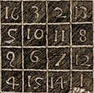

| < |  |
> |
| HOME | GEMÄLDEGALERIE | SEMINARARBEIT | LEBENSLAUF | LINKS |
|
MELANCHOLIA I (1514)
Kupferstich, 240 x 187 mm
Kommentar
Dieser Kupferstich ist eine symbolische Synthese aus der Melancholie und der Personifizierung der Geometrie. Das finstere Gesicht der Allegorie, das Motiv der geballten Faust, die Geldbörse und die Fledermaus sind Bilder, die schon vor Dürer zur Darstellung der Melancholie verwendet wurden. Diesen Elementen fügt der Künstler die geometrischen Symbole Zirkel, Sphäre, Winkel, Meißel und Hammer hinzu. Dürer spielt damit auf die künstlerische Tätigkeit an und illustriert die Worte Aristoteles, die später von dem Humanisten Marsilio Ficino aufgegriffen wurden, dass begabte und schöpferische Menschen zur Melancholie neigen. Bemerkenswert ist auch der nachdenkliche Engel, der die geometrischen Formen eines sternförmigen Pentagons, dem phytagoreischen Pentagramm, aufweist. Des weiteren sollte auch der seltsame behauene Stein am Fuß einer Leiter mit sieben Sprossen (der so genannten "Leiter der Weisen") besondere Beachtung finden.
Detail
 Melancholia ist das erste Werk in Europa, auf dem ein magisches Quadrat abgebildet ist. Seit dem Klassizismus wird die Melancholie als depressiver Zustand des Geistes betrachtet, der dem Künstler die Begeisterung für seine Arbeit raubt. Zahlreiche Astrologen der Renaissance waren der Ansicht, dass die Behandlung der Melancholie durch die Magie eines solchen Quadrats unterstützt würde. Das sollte insbesondere für das dem Jupiter zugeordnete magische Quadrat gelten, das auf dem Stich Dürers rechts oben erscheint. Das Quadrat wird als magisch bezeichnet, weil die Addition der Zahlen jeder einzelnen Reihe, Spalte und Diagonalen immer die gleiche Summe ergibt. Bei dem Quadrat Jupiters ergibt sich die Summe 34. Den Ziffern 3 und 4 kommt in der Alchimie eine ganz besondere Bedeutung zu, da sie die Metamorphose des Alchimisten symbolisieren. Die 4 steht für das endliche, von der Materie eingeschränkte Leben, während die 3 die Unendlichkeit des Geistes und des Universums darstellt. 4 mal 3 ergibt 12 (bei den Tarotkarten entspricht die 12. Karte dem Gehängten) und symbolisiert die Vereinigung des materiellen und spirituellen Lebens. Albrecht Dürer hat das magische Quadrat so angelegt, dass das Datum der Fertigstellung seines Werks, 1514, in den beiden mittleren Feldern der letzten Reihe zu lesen ist. Das von Dürer gewählte Thema über die Zusammenhänge von Saturn und Melancholie scheint dem 1510 veröffentlichten Werk De occulta philosophia des deutschen Arztes und Mystikers Heinrich Cornelius Agrippa von Nettesheim zu entstammen.
Der traurige und nachdenkliche Engel der Melancholia hat Victor Hugo im Juli 1828 zum Schreiben dieses eponymen Gedichts über die soziale Ungerechtigkeit inspiriert.
MELANCHOLIA
Où vont tous ces enfants dont pas un seul ne rit ? Ces doux êtres pensifs, que la fièvre maigrit ? Ces filles de huit ans qu'on voit cheminer seules ? Ils s'en vont travailler quinze heures sous les meules ; Ils vont, de l'aube au soir, faire éternellement Dans la même prison le même mouvement. Accroupis sous les dents d'une machine sombre, Monstre hideux qui mâche on ne sait quoi dans l'ombre, Innocents dans un bagne, anges dans un enfer, Ils travaillent. Tout est d'airain, tout est de fer. Jamais on ne s'arrête et jamais on ne joue. Aussi quelle pâleur ! La cendre est sur leur joue. Il fait à peine jour, ils sont déjà bien las. Ils ne comprennent rien à leur destin, hélas ! Ils semblent dire à Dieu : « Petits comme nous sommes, Notre Père, voyez ce que nous font les hommes ! » Ô servitude infâme imposée à l'enfant ! Rachitisme ! travail dont le souffle étouffant Défait ce qu'a fait Dieu ; qui tue, oeuvre insensée, La beauté sur les fronts, dans les coeurs la pensée, Et qui ferait - c'est là son fruit le plus certain ! - D'Apollon un bossu, de Voltaire un Crétin ! Travail mauvais qui prend l'âge tendre en sa serre, Qui produit la richesse en créant la misère, Qui se sert d'un enfant ainsi que d'un outil ! Progrès dont on se demande « Où va-t-il ? que veut-il ? » Qui brise la jeunesse en fleur ! Qui donne, en somme, Une âme à la machine et la retire à l'homme !
Victor Hugo (Les Contemplations, Buch III « Les luttes et les Rêves », II, Vers 113 bis 146, April 1856)
Links
Website des Städelmuseums in Frankfurt:
Informationen zur literarischen Interpretation dieses Gemäldes (Gérard de Nerval, Théophile Gautier, Verlaine…): http://www.culture.hu-berlin.de/hb/volltexte/pdf/Melancholia.pdf http://users.skynet.be/litterature/lecture/melancholia.htm (französisch)
Informationen zu diesem ersten magischen Quadrat in Europa: http://www.kandaki.com/CM-Durer.htm?page=http://www.kandaki.com/CM-Durer20.htm (französisch)
|